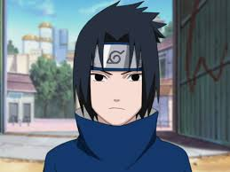
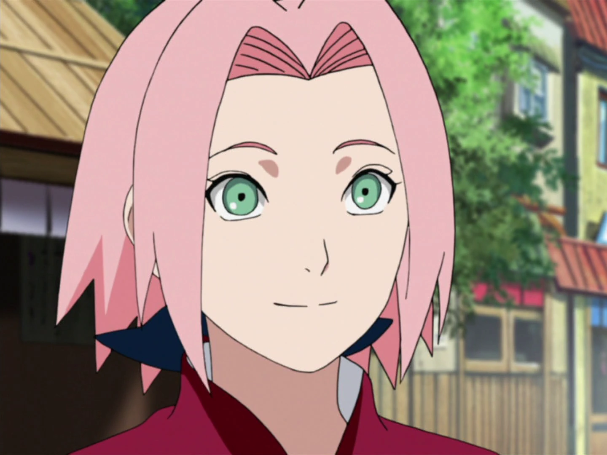

Featured Characters

Naruto Uzumaki
Usia: 12 (awal cerita)
Jutsu Utama: Rasengan, Shadow Clone Technique
Impian: Menjadi Hokage dan diakui oleh desa.

Sasuke Uchiha
Usia: 12 (awal cerita)
Jutsu Utama: Chidori, Fire Style Techniques
Impian: Membalas dendam pada saudaranya, Itachi.

Sakura Haruno
Usia: 12 (awal cerita)
Jutsu Utama: Medical Ninjutsu, Super Strength
Impian: Menjadi ninja medis terbaik.